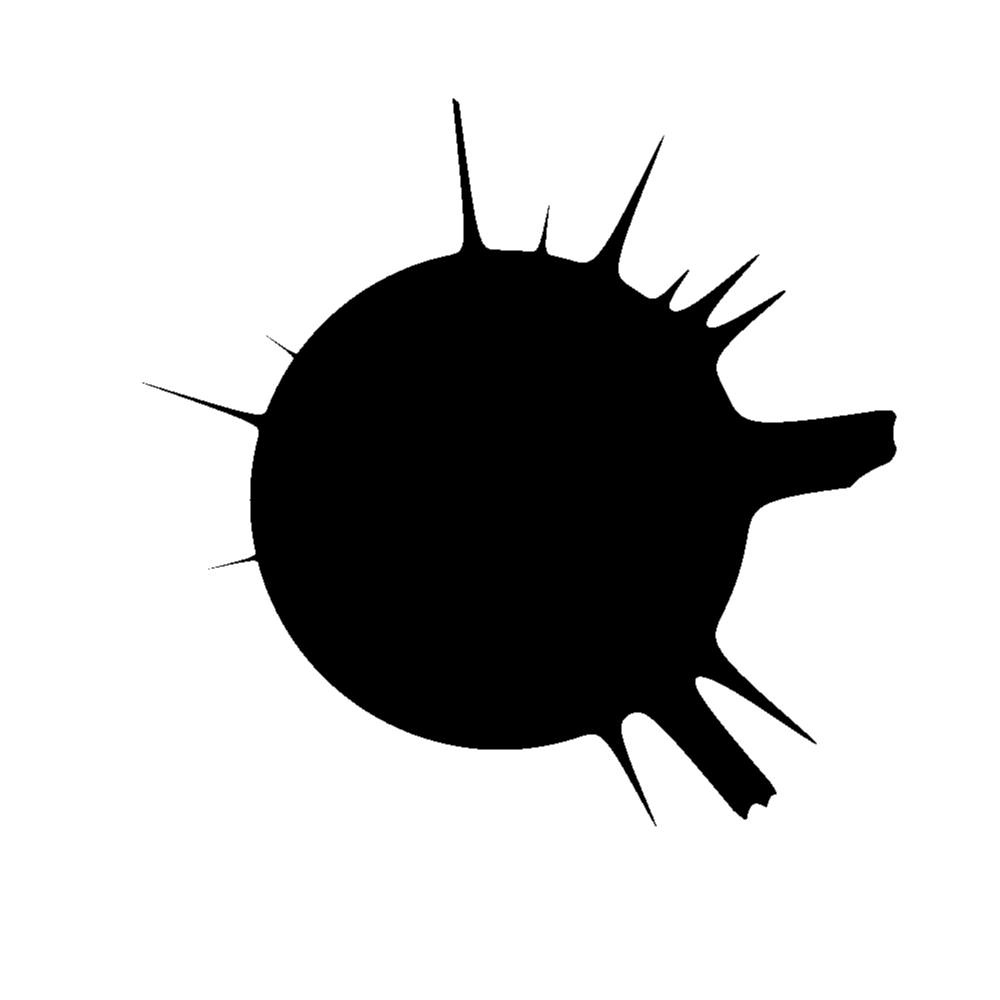

Run of com.github.skac112.klee.painters.FingerSun painter
Time: 22-12-02_03:39:10Git hash: f47110d
Painter parameters
- randSeed: 0
- averageLen: 0.1
- circleRadius: 0.25
- numFinger: 20
Render parameters
- X range: <-0.5; 0.5>
- Y range: <-0.5; 0.5>
- nx: 1000, ny: 1000
